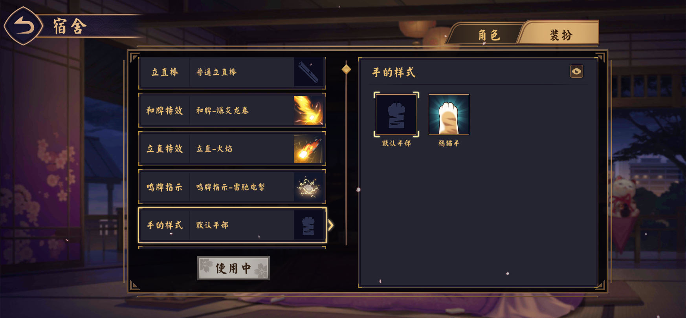
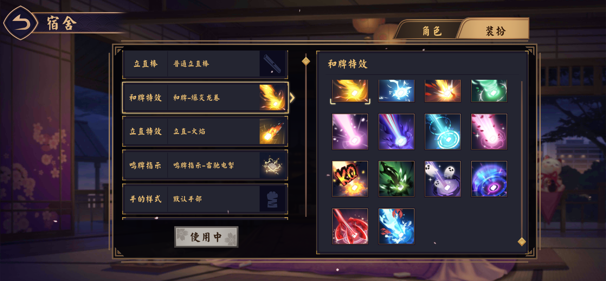
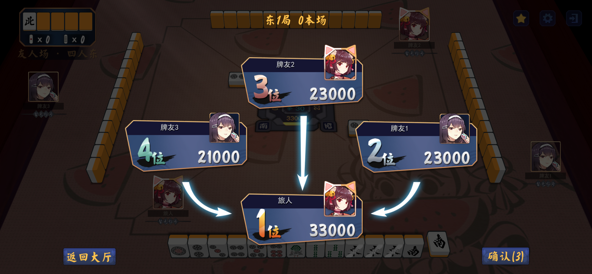
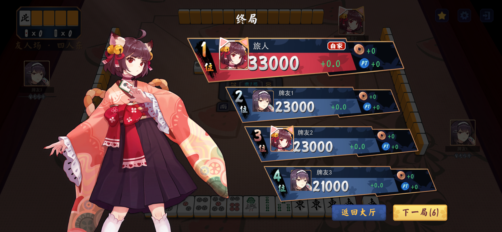
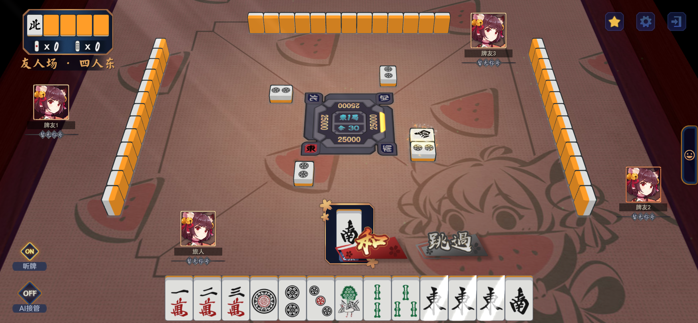
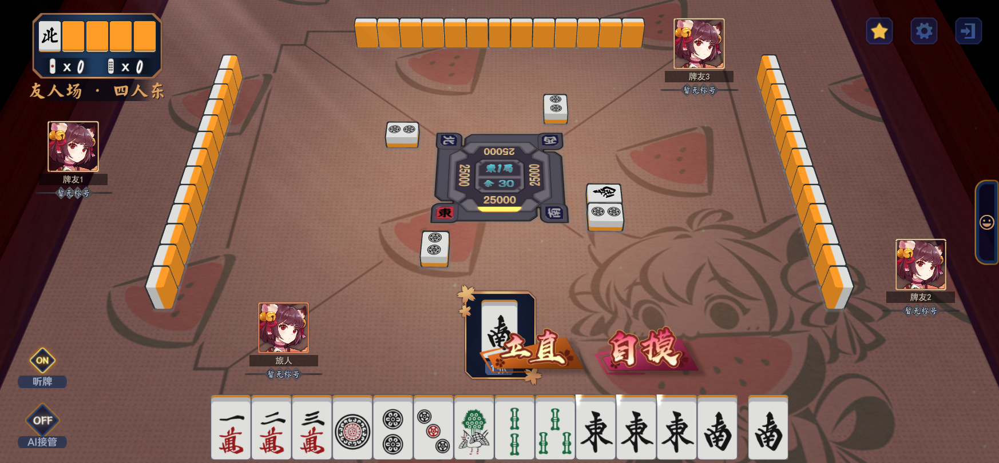
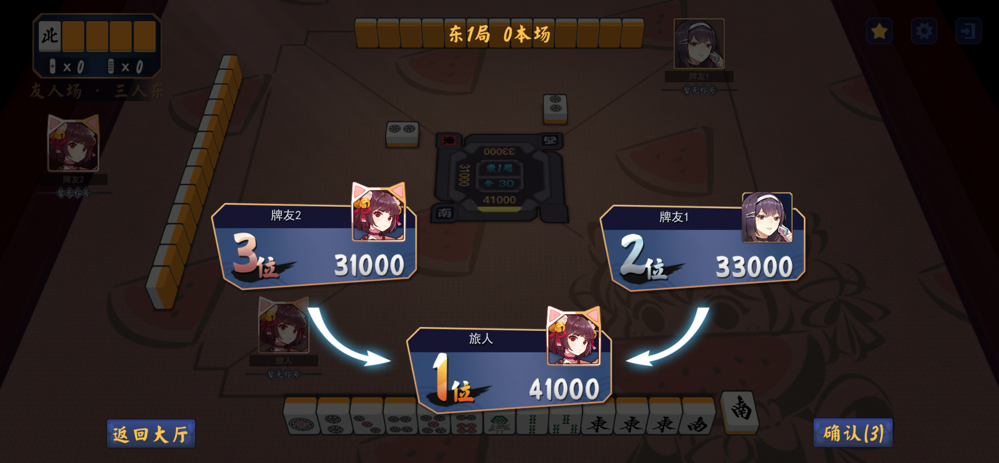
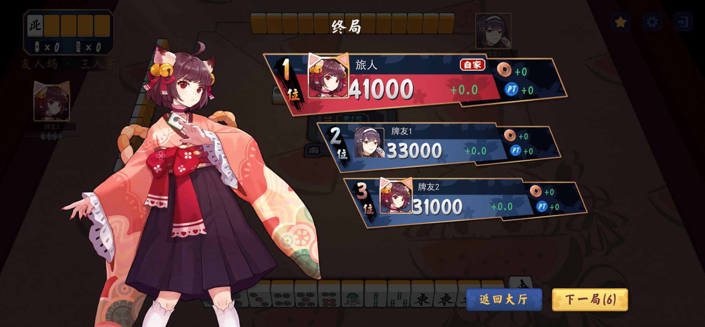

云间日麻 · R15 修改截图
真实 Unity 运行截图。58 项定向检查、181 项引擎检查通过。本轮没有视频或新 APK；手机 0.6.15 尚不含本轮改动。
完整说明与统计口径 · 逐条配置与估算证据 · 截图与交互检查
手部选择：删除多余解释
右侧列表在框内滚动
四人点数结算：本局头像框
四人终局：本局头像框
荣和：听牌展开保持到轮询之后
自摸：听牌展开保持到轮询之后
三人点数结算
三人终局
装扮数量
官方公开配置 0.11.252.w 的定义记录，含默认和历史条目。手部 27 条中有 22 条标记“已过期”，不代表 27 种普通可选手部。背景音乐含大厅 9 条、对局 13 条。原生清单的较新未映射条目不计入本表。
| 类别 | 配置条数 |
|---|
| 立直棒 | 61 |
| 和牌特效 | 60 |
| 立直特效 | 57 |
| 手部配置 | 27 |
| 立直音乐 | 17 |
| 头像框 | 90 |
| 桌布 | 69 |
| 牌背 | 57 |
| 大厅背景 | 20 |
| 大厅／对局背景音乐 | 22 |
| 鸣牌指示 | 3 |
| 牌面 | 3 |
全部装扮内置后，APK 总大小估计约 650 MB～1 GB，当前约 215 MB。没有执行全量构建；不含额外全角色立绘／皮肤／语音／表情和全部加载 CG。